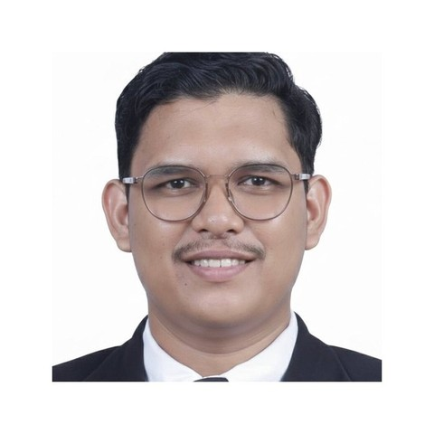

Kuala Lumpur, Malaysia
AZUAN HANAFI
Configuration & Data Management Specialist
Configuration and data management professional with 9+ years enforcing controlled,
traceable engineering lifecycle data across PLM/ERP systems — now applying that
discipline in a certification-driven airborne engineering environment aligned to
DO‑254, DO‑178C, and ARP4754A. I define configuration items, manage baselines,
run change control workflows (CR/PR/ECN), and deliver audit-ready status accounting.
Experience
A track record of tool and repository governance, process discipline, and cross-functional
collaboration across regulated, standards-driven industries.
Apr 2026 — Present
Software Configuration Management Specialist
Turkish Aerospace Malaysia · Cyberjaya
- Define and maintain configuration items across the engineering lifecycle (requirements, design, implementation, verification, release) for airborne electronic hardware and embedded software programs.
- Establish and manage requirements, design, and release baselines so changes stay controlled and traceable.
- Lead Software Change Control Board (SCCB) meetings — impact assessment, change-request approval, and prevention of unauthorized changes.
- Provide configuration status accounting and keep data audit-ready for compliance activities aligned to DO‑254, DO‑178C, and ARP4754A.
- Support disciplined use of JIRA, IBM DOORS, LDRA, and SVN/Git for issue tracking, requirements, verification evidence, and release tagging.
- Built a JIRA Change Request Dashboard from scratch for real-time visibility into CR status, approvals, and ownership.
Oct 2023 — Mar 2026
PLM Configuration Controller
Cochlear Malaysia Sdn Bhd · Kuala Lumpur
- Global responsibility for setting, maintaining, and enforcing configuration-item identification and change-management standards across the business.
- Led Change Review Board (CRB) meetings — equivalent to CR/ECR/ECN change control workflows — and authored implementation plans in formal change notices.
- Established and maintained baselines in Windchill PLM, regulating the change process so only approved, validated changes were incorporated.
- Owned configuration status accounting: KPI-based reports on open workflows, data quality, and system status for stakeholders and management.
- Conducted regular configuration audits and governed tool discipline across Windchill PLM, Oracle ERP, and Cherwell CSM.
- Developed and delivered training materials and on-the-job coaching for Windchill users and the CM team.
Sep 2022 — Sep 2023
Document Controller Executive
Armstrong Auto Parts Sdn Bhd · Negeri Sembilan
- Managed full lifecycle traceability for 1,000+ controlled engineering and quality documents under IATF 16949.
- Led document audits contributing to zero non-conformances across 2023 internal and customer audits.
- Initiated controlled-document process improvements delivering RM30,000 in cost savings for FY2023.
- Facilitated Quality Control Circle (QCC) competitions to promote lean documentation practices.
Jan 2017 — Aug 2022
Document Controller
PHN Industry Sdn Bhd · Melaka
- Designed documentation and configuration protocols for 5+ new model launches, improving project delivery timelines by 20%.
- Compiled and analyzed production data to support management decisions and cycle-time tracking.
- Streamlined document filing and retrieval, cutting information retrieval time by 40%.
- Contributed to Lean Six Sigma / ICC initiatives — 2nd runner-up (2018, 2019) for process improvement.
Download full resume (PDF)
Projects
PQRE Dashboard
JIRA Change Request dashboard — Turkish Aerospace Malaysia (TUSAS)
Designed and built from scratch to give the Configuration Management and engineering
teams real-time visibility into change-request status, approvals, and ownership across
TUSAS Malaysia projects. Replaces manual status tracking and reporting with live,
filterable views tied directly to the SCCB workflow — cutting reporting effort and
keeping change data audit-ready.
Skills
Configuration Management
Baseline management · Change control (CR/PR/ECN, CRB/SCCB) · Configuration status accounting · Configuration item identification · Release management · Audit & compliance evidence readiness
Engineering CM & Requirements Tools
JIRA · IBM DOORS · LDRA · SVN · Git
PLM / ERP & Service Management
Windchill PLM · Oracle ERP · SAP · Cherwell CSM
Reporting & Analysis
Microsoft Power BI · Google Looker Studio · Excel (Advanced, incl. VBA) · SQL
Collaboration & Documentation
Confluence · Microsoft 365 · Teams · SharePoint
Standards & Regulated Environments
DO‑254 · DO‑178C · ARP4754A · IATF 16949 · ISO 9001 · IEC 60601
Education
Diploma in Automotive Management Systems — DRB‑HICOM University of Automotive Malaysia · CGPA 3.95 / 4.00
Certifications
- Windchill PLM Super User — Cochlear Academy
- SQL Essential Training — LinkedIn Learning
- Advanced Excel: VBA — LinkedIn Learning
- Fundamental Skills for Data Work: Data Analysis and Interpretation — LinkedIn Learning